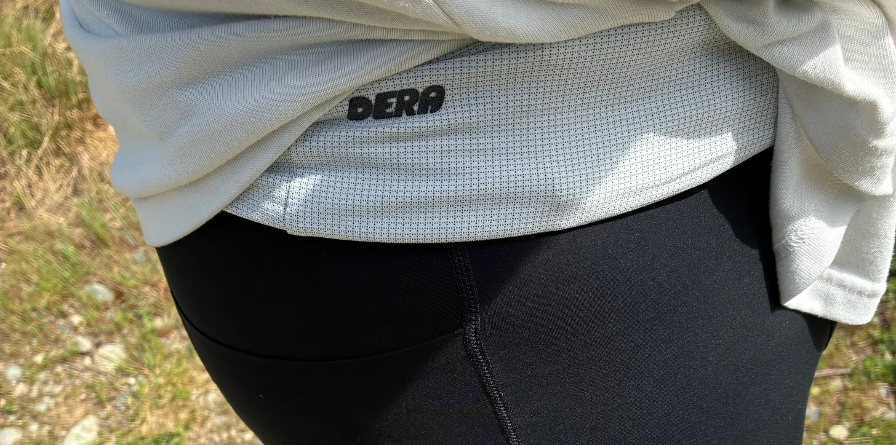

Dera B01 Trail Running Belt Review
A lightweight, dial-fit trail running belt that carries the essentials without bounce, bulk, or fuss.
Back to GearBlah blah blah. You know when you read a recipe online and they always write a super long intro and, by the grace of God, you want to reach your hand through the screen and shake them and tell them never to do that again… like, just give me the effing recipe. I was an asshole and wrote one of those intros and then I just deleted it. You want to know about the belt… let’s just get right to it.

The Good
Carrying Capacity
I have a ton of mileage across all of my running belts, which are the Raide LF 2L and the Naked belt. These have been my main drivers until I got the Dera B01 belt in, and I’ve just been unable to stop reaching for it — I’m hooked.
To date, I have a couple hundred miles in this belt since I received it. I’ve been battling some IT band soreness post 50-miler attempt (DNFed at 50k, ooph). So I’ve been doing a slow roll getting back into some deeper mileage weeks, sitting at around 20–30 lately.
I have taken the Dera belt on runs that range from 3 miles to 13 miles. Realistically, I would love to take it on longer runs, but like I said, I’m slowly rolling back into my normal mileage from some IT band annoyance. These have all been trail runs out here in the PNW. For these runs, I’ve experimented with a couple different capacity setups.
For a 6-miler, you can see everything I fit with ease below. I was able to bring a full 575 ml flask filled with Open Fuel drink mix, my Janji first aid kit, a bandana to wipe the sweat away, some wipes… ’cause you know… and, not pictured, my phone.

The Bad
Dare I say it? I don’t think there’s anything bad.
I’m a heavier guy, so I actually don’t need to cinch down the dial very much to get a no-bounce fit.
I don't use the salt pill pocket, but that's just preference, not bad!
The Verdict
Uh…duh. Buy it. Easy. Done. I got you.
The Dera B01? Brah, it’s a vibe. Like I said, I’m hooked. It’s my favorite belt to reach for. The combination of pockets, the fit of the belt, the ease of getting it on, the freaking flask (I LOVE THIS FLASK), the materials, the no-bounce, all of it. It just makes for a piece of gear that enhances your run, not obstructs it. It carries just the right amount, and it just becomes a part of yourself as you’re out there adventuring.
I’m again so grateful to Morgan for hooking it up and sending me his pride and joy, and I’m even more stoked for the success they’ve been having. Jimmy Elam just got 2nd at Hardrock wearing one — this could be you!
After hundreds of miles, I truly don’t have anything bad to say here. It’s the belt I continually reach for. For kicks and gigs, I took my Raide and Naked belt out for runs recently and after five minutes had regrets that it wasn’t my Dera belt. I love this belt so much, it’s a staple to have in your running arsenal.

Buy If
- You want a blend of a Raide belt and a Naked belt.
- You want less structure and easier entry without sacrificing a no-bounce fit.
- You want secure zippered pockets for valuables.
- You are tired of hook-and-loop straps losing their grip over time.
Skip If
- You prefer the more structured feel of a Raide LF 2L.
- You want a traditional hydration vest instead of a low-profile belt.
Disclosure
Disclosure: This product was provided by the manufacturer for review. As always, they had no input into our testing, opinions, or final verdict.